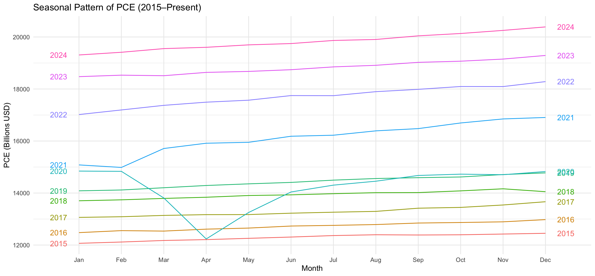

Overview
A time-series forecasting project modelling monthly US Personal Consumption Expenditures (PCE) to produce a statistically validated 12-month economic demand outlook. Multiple forecasting models were built, compared, and the best-performing configuration selected for the final forecast.
The Business Question
Personal Consumption Expenditures account for roughly 70% of US GDP. Accurate short-term forecasting of PCE enables businesses and policymakers to make better decisions on inventory, staffing, and resource allocation. This project asked: which forecasting approach most reliably predicts near-term consumption trends?
Methodology
- Data: seasonally adjusted monthly US PCE series
- Models built: ARIMA, Exponential Smoothing (ETS), Naive baseline, Drift baseline
- Model selection criteria: MAE and RMSE measured on a held-out test period
- Final model: ARIMA(5,1,2) — selected for lowest error metrics across both measures
- Output: 12-month forward forecast with 80% and 95% confidence intervals, reported on original dollar scale
Model Comparison
| Model | RMSE | MAPE |
|---|---|---|
| Naive Baseline | 0.412 | 2.91% |
| ETS(A,A,N) | 0.189 | 1.24% |
| Auto ARIMA(4,1,1) | 0.071 | 0.48% |
| ARIMA(5,1,2)Selected | 0.0527 | 0.350% |
Metrics reported on Box-Cox transformed scale (λ = 0.0228). ARIMA(5,1,2) selected for lowest RMSE and MAPE across all candidate models.
Key Findings
ARIMA(5,1,2) outperformed all baseline and ETS models on both MAE and RMSE
Clear winner across every error metric
US PCE follows predictable seasonal patterns captured by the model
Both trend and seasonality components modelled successfully
12-month forecast produced with confidence intervals for planning reliability
80% and 95% prediction bands included
Forecast extends to December 2025, projecting PCE at $21,661bn
95% confidence interval: $20,596bn – $22,781bn
Seasonal Decomposition

Seasonal Decomposition of US PCE — separating the series into trend, seasonal, and remainder components. The clear upward trend and consistent seasonal pattern confirmed ARIMA was an appropriate modelling approach.
Model Comparison

Forecast Model Comparison — ARIMA(5,1,2), Auto ARIMA(4,1,1), ETS, and Naive models overlaid against actual PCE data. ARIMA(5,1,2) most closely tracks the actual series across the test period, confirming its selection as the final model.
The Data

Final Forecast of US PCE using ARIMA(5,1,2) trained on full data — blue line shows the 12-month ahead forecast, pink band shows the forecast confidence interval. Historical data spans 1960–present (PCE in Billions USD).
Business Implications
The final ARIMA(5,1,2) model provides a reliable near-term planning tool for consumer demand forecasting. Businesses in consumer-facing sectors can use PCE forecasts to plan inventory, staffing, and marketing spend 6–12 months in advance with statistically grounded confidence intervals. The model's strong performance (RMSE = 0.0527 on transformed scale) and clean residual diagnostics confirm it is an appropriate and well-calibrated forecasting tool.